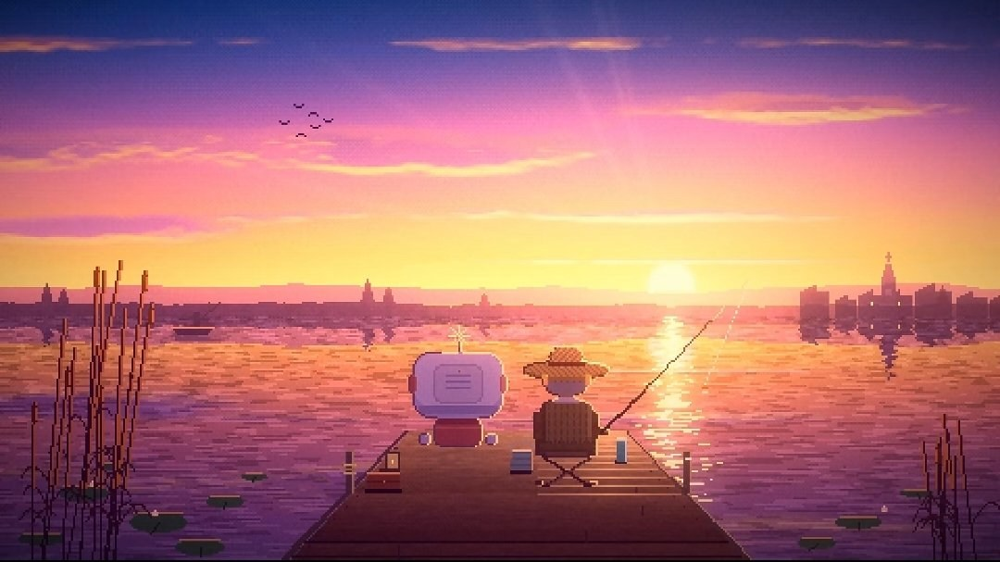
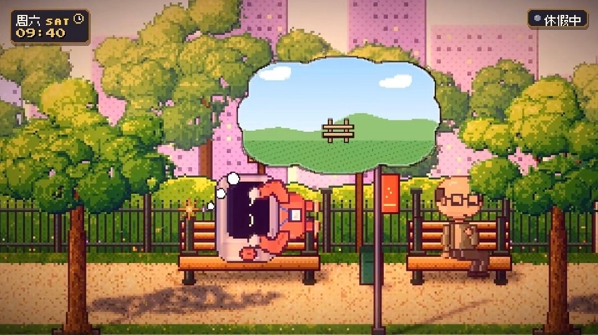

A deterministic Python renderer for 1080p pixel-art explainer films. A shot is a
function of time: frame(t) is pure, so rendering is parallel, a quality
check is a timestamp, and picture and score read the same clock.
Friday 16:30. Requests arrive as falling bricks; each one is a physics event that drives a sound cue and a reaction.

Sunset over the city. Five time-of-day presets; three named post grades.

Park benches. Procedural characters: hair, glasses, clothing, expression, arm pose.09:00. Chat bubbles and the UI layer sit on a 480×270 grid scaled exactly ×4.00:02. The same set at night, lit by the monitor and an LED.